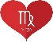
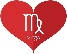

The relationship between a Cancer and Virgo can seem like an odd and unusual pairing to others. From a distance and on the surface, it will appear that
neither of these two have anything in common. When you take a more in-depth look, there is one quality that they share, and that is their crankiness.
Cancer is a water sign. Cancer is symbolized by the Crab, and they are known to be overly emotional and are continually complaining about what bothers
them. Virgo is a practical earth sign that is symbolized by the pure, virginal maiden. Virgo’s aren’t as sensitive as Cancer’s, but they are incredibly
expressive about their discontent, and when something bothers them. Together, they will find a mutual harmony in their ability to complain to each other
about the woes of life.
Virgo has a sense of logic and intellect, while Cancer leans on their intuitive nature, this healthy difference improves the relationship compatibility
of this couple. When a Cancer dates a Virgo, they need to learn to become more practical and look into life through an intellectual lens, while the
Virgo partner needs to have more trust in their intrinsic, intuitive nature. Virgo and Cancer Compatibility can be given a huge boost just by following
these simple practices in life.
Both Virgo and Cancer are feminine signs, and they are both relatively timid and reserved in their own way. They do not like to be the center of
attention, and they both tend to retreat into isolation when faced with troubling and challenging situations. When in a relationship, they will both
retreat into safety together, and they can create somewhat of a safe haven between each other in the relationship. They will protect each other from the
dangers and disappointments of the world.
Virgo has the trait of the Healer archetype, and Cancer has the Homemaker Archetype. Together, they create an amazingly loving and nurturing home where
they always have each other’s best interests at heart. Cancer has the intrinsic ability to take care of their loved ones under an emotional umbrella of
affection, while Virgo has more of a practical approach towards the same kind of care for their loved ones.
Both Virgo and Cancer have an old fashioned, traditional approach to love and dating. They take their relationship very seriously, and they have
specific structures and expectations that they expect from the relationship. A casual relationship is not for them.
Both Virgo and Cancer needs to know that their partner is all in. They both appreciate transparency and honesty and will garner a feeling of mutual
trust and support in their relationship. Neither Virgo or Cancer has wandering eyes and will always remain faithful to each other.
Virgo and Cancer are both known to be healers and nurturers. Cancer is a lot like a mother, always caring, being there for those in need, especially
others who need an ear to talk to and those in need of some emotional support. Virgo, on the other hand, is not the best emotional support, but they
can encourage anyone to heal their physical body and spiritual state.
Virgo’s promote purity, and that includes purity of spirit, body, and energy. Virgo’s help people to remove the elements and influences in their lives
that are impure so that they can become whole again. Due to this healing nature of Cancer and Virgo, it makes sense that they make a good match, as they
both care about the greater wellbeing of others.
Although they can care for and heal others, they do struggle when it comes to helping and healing themselves. They both experience negative thoughts
that cause them depression, negativity, and anxiety. Due to this, Cancer’s and Virgo’s suffer from physical and emotional ailments regularly.
Both Virgo and Cancer put tremendous importance into their home life. They are both homebodies and prefer to stay in and watch a movie over going out
and socializing. Together, they will aim to create the most beautiful, loving, and harmonious homeplace, with a secure future.
Both signs are not bothered by the social pressure of their peers, nor are they interested in having an exciting social life. Cancer and Virgo can have
a deep companionship just by staying in each other’s presence. They could have many children and pets together and focus on building a family!
The Virgo will be very sympathetic and caring toward the woes that the Cancer goes through, more so than any other zodiac sign. However, just like the
other signs, they do have a limit when it comes to how much they can take. When the Cancer’s negativity and moodiness get too much for Virgo to handle,
Virgo will lash out and become critical towards the Cancer and accuse the Cancer of being weak with no backbone. Once this happens, the Cancer will sink
even deeper into melancholy.
Cancer needs to understand that the Virgo can only handle so much negativity before they lose their cool. Virgo expects a level of self-confidence and
inner strength from other people, and if they can see the Cancer has very little inner strength, it can irritate them. The Virgo will, however, try and
lead the Cancer to find their own inner strength.
Virgo’s practical approach towards life will captivate their Cancer partner, and they will incorporate it into their domestic life. Virgo’s emotionless
attitude towards many things in life can sometimes frustrate their partner, but Cancer’s caring nature quickly solves it.
The sexual chemistry between these two will not be potent, nor will it be very weak. The sexual bond between Cancer and Virgo takes time to grow;
however, over time, they will be able to understand each other’s sexual needs completely. There will not be significant arguments and disagreements
between Virgo and Cancer. The main disputes they can have are over trivial things, such as leaving the toilet seat up or down, deciding what to have for
dinner or what colors the bedroom curtains should be. If the Virgo wants one thing, and the Cancer wants something else, you can expect some critique
from the Virgo and some crabbiness from the Cancer. Generally, the Virgo will take the upper hand, and they will not give in. Cancer is usually the one
to give in, and after they have allowed the Virgo to get their way, they will sulk for a few hours, and then move on as if it never even happened after
they are done sulking. There will always be a strong trust bond between Virgo and Cancer, as they are both so aware of each other’s emotions, neither of
them will ever do anything to hurt the other.
Virgo’s prefer to be alone and spend time isolated and in their own space. They are introverts and do not like socializing and can quickly get
overwhelmed when in crowds or when they have to be more open and expressive than usual. Virgo does not experience this sense of becoming overwhelmed
when communicating with Cancer.
Cancer is the only zodiac sign that can put Virgo at complete ease, and make them not feel like they are pressured in the social interaction. Cancer’s
presence has a soothing effect on the Virgo, and vice versa. Cancer does have a stronger emotional response to situations than the Virgo and might need
to rely on the Virgo’s cool calm exterior to help them get through challenging times.
Virgo’s easily get put off by vulgarity, rudeness, and loudness. They struggle with Leo’s and Gemini’s in relationships because they can be overly loud
and disruptive at times. Cancer can be funny and humorous in a way that does not irritate or infuriate the Virgo.
Cancer has a classy, sophisticated style when it comes to cracking jokes and expressing their humor. The Virgo really appreciates Cancers’ lack of
crudeness and rudeness when being funny, as Virgo is not the biggest fan of toilet humor. Both Virgo and Cancer have high standards when it comes to
their wants and needs in life, and they both want a life of luxury, comfort, and class.
Both Virgo and Cancer are very hardworking. Virgo does have the ability to work slightly harder than Cancer, and Cancer will find this quality in Virgo
extremely attractive. When these two signs set their mind on a goal, they usually achieve it. They both take their public image very seriously.
They also place a high value on their morals and do not want to take actions that are based on harmful intentions that can cause harm, pain, and
suffering around them. Cancer and Virgo share a mutual interest in healing the world. They also share a mutual interest in improving themselves and
becoming the best possible versions of themselves they can be.